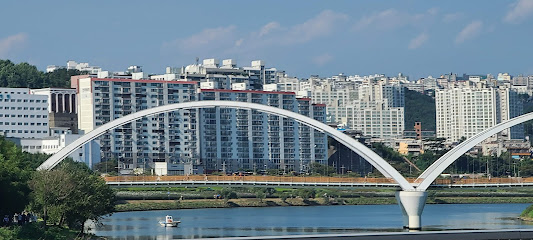
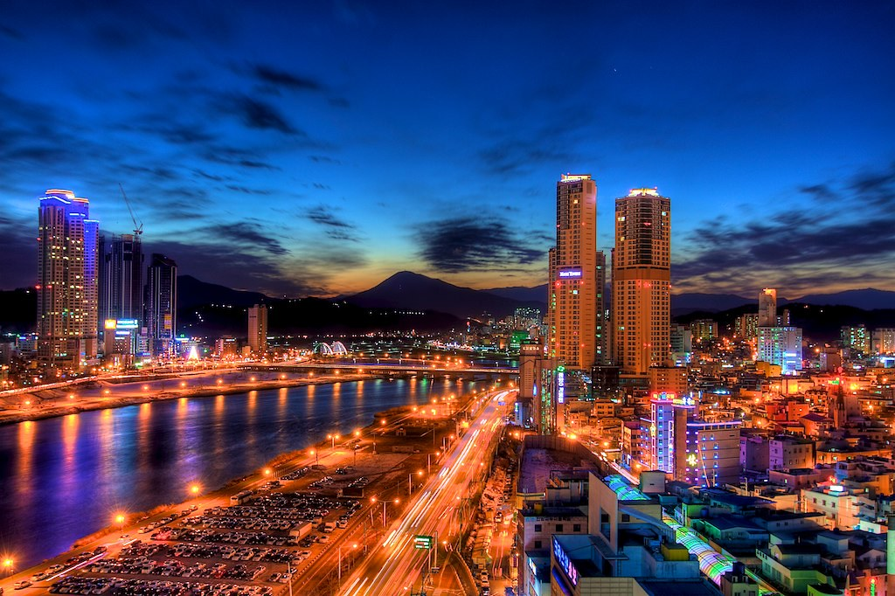

Ulsan (울산), oficialmente Ciudad Metropolitana de Ulsan, es una de las seis ciudades metropolitanas que, junto a las nueve provincias, la ciudad especial y la ciudad autónoma especial, forman Corea del Sur.
Está ubicada en el extremo sureste del país, limitando al norte con Gyeongsang del Norte, al este con el mar del Japón y al suroeste con Busan y Gyeongsang del Sur. Es la séptima ciudad más grande de Corea del Sur, con una población de 1,1 millones de habitantes.
Situada en el extremo sudeste de la península de Corea, durante muchos años fue un puerto pesquero especializado en la caza de ballenas. A mediados del siglo XX, el gobierno surcoreano impulsó sobre ella un plan de desarrollo industrial que terminó convirtiéndola en el núcleo más importante de la economía nacional. Actualmente es la región con el producto interno bruto per cápita más alto al superar los 70.000 dólares. En su terreno alberga la mayor planta mundial de ensamblaje de automóviles, operada por Hyundai Motor Company; el astillero naval más grande del mundo, bajo gestión de Hyundai Heavy Industries, y la segunda mayor refinería de petróleo, en manos de SK Energy.
Ulsan adquirió en 1997 el estatus de ciudad metropolitana.
UBICACIÓN: